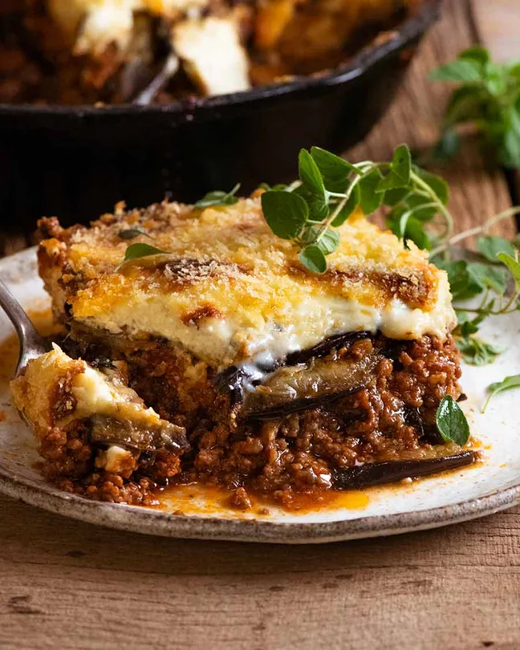

Moussaka
Home

About moussaka
Moussaka (/muːˈsɑːkə/, UK also /ˌmuːsəˈkɑː/, US also /ˌmuːsɑːˈkɑː/) is an eggplant (aubergine)- or potato-based
dish, often including ground meat, which is common in the Balkans and the Middle East, with many local and
regional variations.
The modern Greek variant was created in the 1920s by Nikolaos Tselementes.[citation needed] Many versions have a
top layer made of milk-based sauce thickened with egg (custard) or flour (béchamel sauce). In Greece, the dish
is layered and typically served hot. Tselementes also proposed a vegan variant for orthodox fast days. Romania
also has a vegan version that replaces meat with mushrooms or a mix of sautéed onions and rice.
Ingredients
- 1 kg / 2 lb eggplant (aubergines)
- 1 tsp salt
- 2 - 3 tbsp olive oil
- 1 tbsp olive oil
- 1 onion
- 3 garlic cloves
- 1.4 lb / 700 g ground beef or lamb (mince)
- 125 ml red wine
- 14 oz /400g crushed tomatoes
- 3 tbsp tomato paste
- 250 ml beef broth/stock
- 1 beef bouillon cube
- 2 bay leaves
- 1.5 tsp sugar (any)
- 2 tsp dried oregano
- 0.5 tsp cinnamon
- 0.75 tsp salt
- 4 tbsp (60g) butter
- 50 g plain flour
- 625 ml milk
- 0.25 tsp nutmeg, freshly grated (optional)
- 50 g parmesan cheese, grated
- 1 egg
- 1 egg yolk
- 1.25 tsp Vegeta, vegetable or chicken stock powder
- 0.25 tsp pepper
- 20 g panko breadcrumbs
Steps
- Place eggplant slightly overlapping in a large colander. Sprinkle with some salt. Repeat with remaining eggplant.
- Leave to sweat for 30 minutes. Meanwhile, make Meat Sauce and Béchamel Sauce.
- Preheat oven to 240C/450F.
- Pat eggplant dry - make sure to do this well, otherwise it's too salty. Lay on parchment paper lined trays (you might need 3 trays, work in batches), brush with oil.
- Bake 15 - 20 minutes or until lightly browned and softened . Remove and set aside to cool slightly.
- Heat olive oil in a large skillet or pot over high heat, then cook the garlic and onion for 2 minutes.
- Add the beef or lamb and cook until it changes from pink to brown, breaking it up as you go.
- Add wine, cook for 1.5 minutes or until alcohol smell is gone.
- Add remaining ingredients and stir to combine. Bring to a simmer, then lower heat to medium low and cook for 15 minutes, or until reduced to a thick sauce.
- Melt butter in a pan over medium heat. Add flour and cook for 1 minute, stirring constantly.
- Stirring constantly, slowly add the milk. Then stir regularly for 3 to 5 minutes or until it thickens so that it thickly coats the back of a wooden spoon (see video / step photos).
- Remove from the stove and whisk in cheese, nutmeg, Vegeta/stock powder (or salt) and pepper.
- Allow to cool for 5 minutes, then whisk the eggs in. Cover with lid until required.
- Lower oven to 180C/350F (all oven types).
- Place half the eggplant in the bottom of a baking dish (I used my 26cm/9" Lodge skillet), then top with all the Filling.
- Top with remaining eggplant, then pour over the Béchamel Sauce, sprinkle with breadcrumbs.
- Bake for 30 - 40 minutes or until golden brown. Allow to stand for 10 minutes before serving.